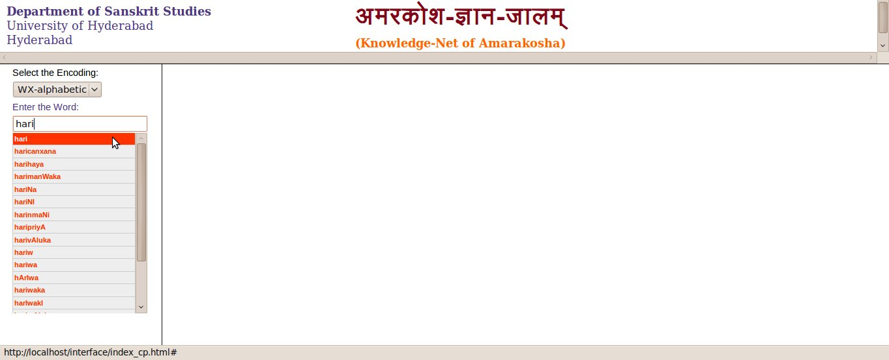
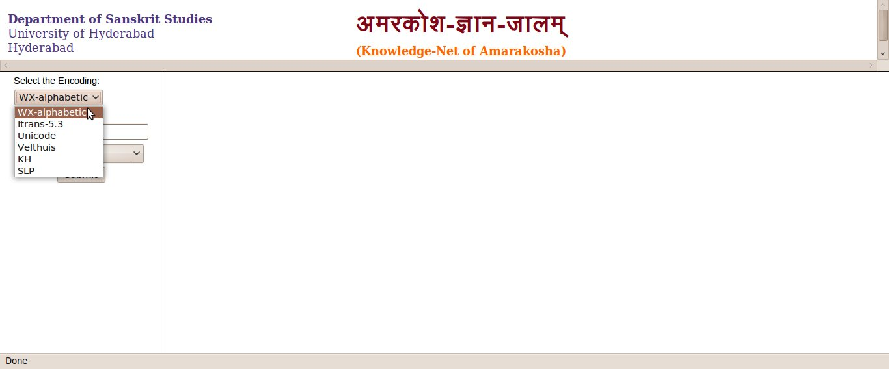
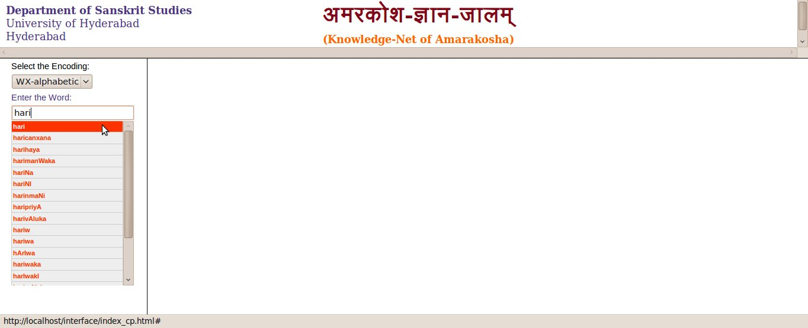
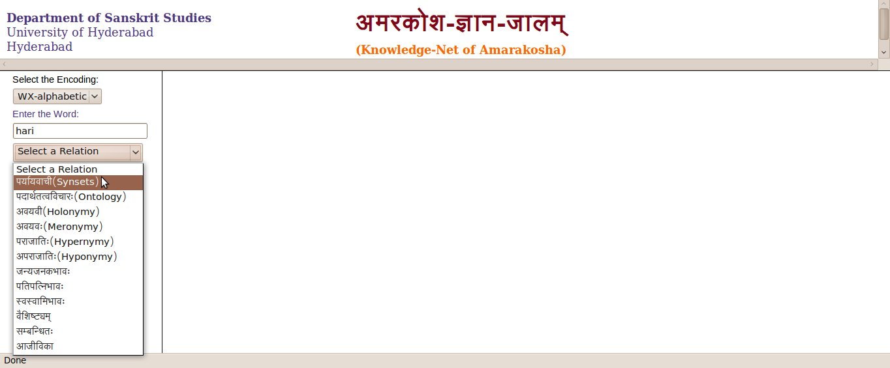
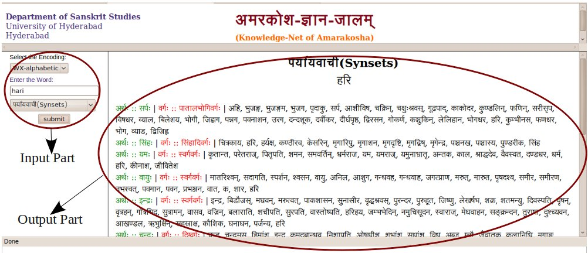

How to use KNA?
KNA has divided into two major levels : Input specification and output specification.
Input specification:
Step 1 : Select an appropriate encoding.

Step 2 : Enter the stem (प्रातिपदिकम्) according to your notation. Notation chart is given below.

Step 3 : Select any one Relation and click on submit button.

The relations between the words of amarakosha would be the output.
